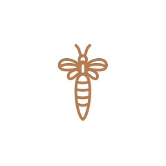
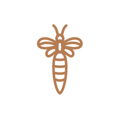
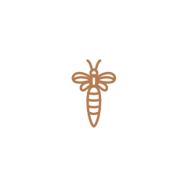
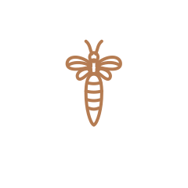
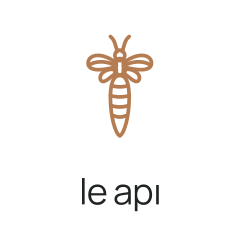
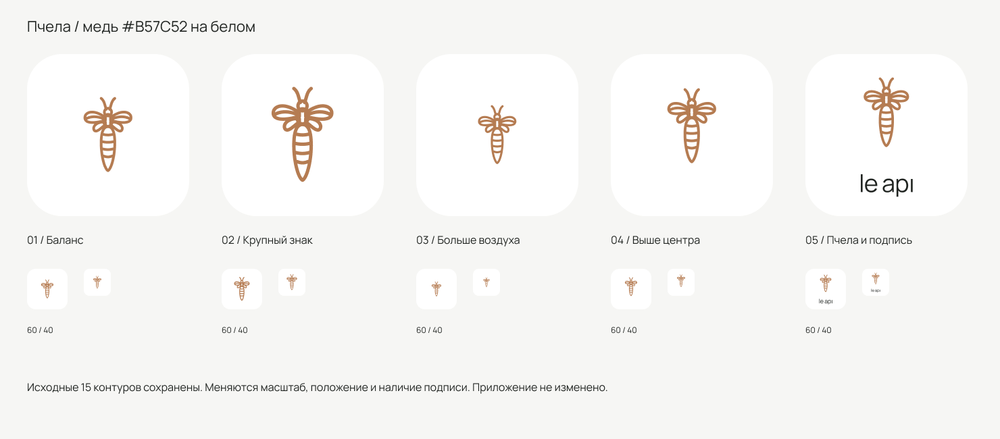

01 / Баланс
Основной кандидат: знак заметен, вокруг достаточно воздуха.
#B57C52 — медный цвет из брендбука. Исходная пчела с 15 контурами, без изменения рисунка. Пять композиций: различаются размер, положение и подпись. Нажмите на иконку, чтобы открыть вектор.

Основной кандидат: знак заметен, вокруг достаточно воздуха.

Более выраженная пчела для узнавания на домашнем экране.

Самая сдержанная композиция; детализацию оценивать в малом размере.

Пчела поднята на 13 единиц: нижнее поле становится спокойнее.

Пчела — главный знак, название помогает связать её с приложением.
Сбалансированный масштаб и спокойные поля. 02 — если хочется более заметный знак. 03 и подпись в 05 тоньше в размере 40: перед выпуском потребуется проверка на реальном экране.
Открыть все варианты одним изображением